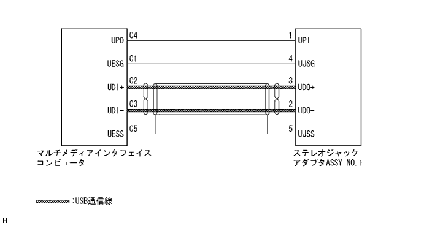
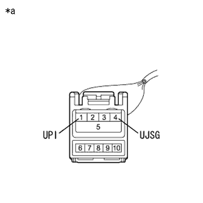

HDD Navigation System USB Memory or "iPod" cannot be Recognized / Played |

)| Step 1 | Inspect USB Memory or "iPod" |
Disconnect the USB memory or "iPod" from stereo jack adapter assembly NO.1.
Check whether playable files exist in the USB memory or "iPod".
Check that the customer's USB memory or "iPod" is of a supported format and version.
for reference.| Result | Proceed to |
|---|---|
| A |
| B |
|
| ||||
| A | |
| Step 2 | Inspect Multimedia Interface Computer (UPO, UESG) |
 |
Pre-inspection Preparation
Disconnect the stereo jack adapter assembly NO.1 connector.
Inspect Resistance and Voltage
Using SST (Toyota electrical tester), with the multimedia interface computer connector connected, measure the voltage between the terminals of the stereo jack adapter assembly NO.1 vehicle side wire harness connector.
| Tester Connection (Terminal Symbol) | Condition | Standard |
|---|---|---|
| 1(UPI) - 4(UJSG) | ACC ON | 5 V |
| *a | Front view of wire harness connector (stereo jack adapter assembly NO.1) |
|
| ||||
| OK | |
| Step 3 | Inspect Wire Harness and Connector (Multimedia Interface Computer - Stereo Jack Adapter Assembly NO.1) |
Pre-inspection Preparation
Disconnect connector C of the multimedia interface computer.
Disconnect the stereo jack adapter assembly NO.1 connector.
Resistance Inspection
Using SST (Toyota electrical tester), measure the resistance between each terminal of the vehicle wire harness connectors between the multimedia interface ECU and stereo jack adapter assembly NO.1.
| Tester Connection (Terminal Symbol) | Condition | Standard |
|---|---|---|
| C4(UPO) - 1(UPI) | Always | Below 1 Ω |
| C1(UESG) - 4(UJSG) | Always | Below 1 Ω |
Using SST (Toyota electrical tester), measure the resistance between each terminal of the stereo jack adapter assembly NO.1 vehicle side wire harness connector and body ground.
| Tester Connection (Terminal Symbol) | Condition | Standard |
|---|---|---|
| 1 (UPI) - Body ground | Always | 10 kΩ or higher |
| 4 (UJSG) - Body ground | Always | 10 kΩ or higher |
|
| ||||
| OK | |
| Step 4 | Inspect Wire Harness and Connector (Multimedia Interface Computer - Stereo Jack Adapter Assembly NO.1) |
Pre-inspection Preparation
Disconnect connector C of the multimedia interface computer.
Disconnect the stereo jack adapter assembly NO.1 connector.
Resistance Inspection
Using SST (Toyota electrical tester), measure the resistance between each terminal of the vehicle wire harness connectors between the multimedia interface ECU and stereo jack adapter assembly NO.1.
| Tester Connection (Terminal Symbol) | Condition | Standard |
|---|---|---|
| C2(UDI+) - 3(UDO+) | Always | Below 1 Ω |
| C3(UDI-) - 2(UDO-) | Always | Below 1 Ω |
| C5(UESS) - 5(UJSS) | Always | Below 1 Ω |
Using SST (Toyota electrical tester), measure the resistance between each terminal of the stereo jack adapter assembly NO.1 vehicle side wire harness connector and body ground.
| Tester Connection (Terminal Symbol) | Condition | Standard |
|---|---|---|
| 3 (UDO+) - Body ground | Always | 10 kΩ or higher |
| 2 (UDO-) - Body ground | Always | 10 kΩ or higher |
| 5 (UJSS) - Body ground | Always | 10 kΩ or higher |
|
| ||||
| OK | |
| Step 5 | Inspect Setting Operation |
Delete all music files in the USB memory or "iPod", and format or restore it.
Save the data again and check whether the problem recurs.
| Result | Proceed to |
|---|---|
| Malfunction recurs | A |
| Returns to normal | B |
|
| ||||
| A | |
| Step 6 | Replace USB Memory or "iPod" |
Disconnect the USB memory or "iPod" from stereo jack adapter assembly NO.1.
Turn the ignition OFF → ACC ON.
Connect a normal USB memory or "iPod" to stereo jack adapter assembly NO.1.
ReferenceOperate again and check whether the problem recurs.
| Result | Proceed to |
|---|---|
| Malfunction recurs | A |
| Returns to normal | B |
|
| ||||
| A | |
| Step 7 | Replace Stereo Jack Adapter Assembly NO.1 |
Stereo Jack Adapter Assembly NO.1 Swap Inspection
Prepare a new stereo jack adapter assembly NO.1 and replace it. (see)
Check if the malfunction recurs.
| Result | Proceed to |
|---|---|
| Returns to normal | A |
| Malfunction recurs | B |
|
| ||||
| A | ||
| ||